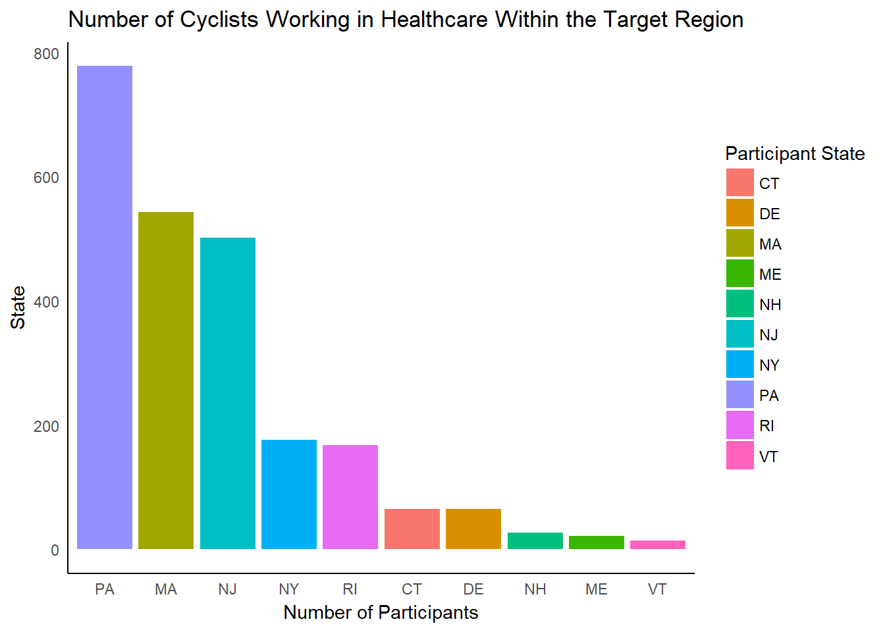

TUN Data Challenge 2018 : Bike MS
Jordan Beary, Ramya Priya Guntipalli, Konrad Miziolek, Eva Forrester
March 23, 2018
GitHub
Before getting started please reference the team’s GitHub pages for any and all code related to producing the analysis for this project, which includes data cleaning scripts, references, data sets, and external images:
- GitHub Webpage and final report : JordanBeary
- Data cleansing and manipulation, data sets, and storing miscellaneous files : konradmiz
Introduction
The National Multiple Sclerosis Society (NMSS), founded in 1946, is the 70th largest nonprofit in the United States1, and is dedicated to fund research and perform outreach/public awareness and education regarding Multiple Sclerosis. Multiple Sclerosis (MS), is more frequent in women than men, and is typically diagnosed in patients between the ages of 20 and 502. The causal mechanism of MS is unknown but hypothesized to be an interplay of an unknown environmental factor and genetic predisposition. Around 400,000 people in the United States have MS (with an additional 200 diagnosed weekly), and the frequency is about twice as high above the 37th parallel as below it. As such, Multiple Sclerosis represents a relevant, impactful disease with a need for research and education3.
The National Multiple Sclerosis Society raises funds primarily through individual donations and through sponsored charity bicycle events (Bike MS) which typically last one or two days4. These events occur in the spring, summer, and fall, and about 70,000 participants take part in one of about 75 different events across the country. As the largest charity bike fundraiser in the United States, the events collectively raise about $68 million. Teams are the largest contributor to the donation pot, representing about 87% of the money raised. However, as charities representing many distinct pathologies now rely on individual donors and bike rides, the market share for Bike MS has fallen yearly since 2012 and is reflected in declining revenue and numbers of participants. Retention of past participants is strong, but fewer and fewer new participants are joining. In 2017, the NMSS suffered a loss of $8 million5. To maintain a fundraising advantage and remain competitive in fundraising, the NMSS has partnered with Teradata University Network to provide their data and relevant business questions to be addressed.
Multiple Sclerosis defined by the National Multiple Sclerosis Society6:
“…involves an immune-mediated process in which an abnormal response of the body’s immune system is directed against the central nervous system (CNS), which is made up of the brain, spinal cord and optic nerves. The exact antigen — or target that the immune cells are sensitized to attack — remains unknown, which is why MS is considered by many experts to be ‘immune-mediated’ rather than ‘autoimmune’”
Data on the prevalence of MS is extremely difficult to find, mainly because it is not consistently reported or required to be reported in the United States. However, the NMSS trust 2008-2012 estimated prevalence at around 400,000.
Regional MS Prevalence
Furthermore, a new study is expected to be released this year which estimates MS incidence and prevalence to be around 1 million in the United States7. Understanding MS prevalence and those affected by it is critical to answering why someone would want to join one of the largest cycling fundraiser in the United States, Bike MS.
MS Gender Gap
Insurance data was collected from 2008 to 2012 and analyzed by the American Academy of Neurology. The standard prevalence metric is number of MS patients out of 100,000. There are some interesting trends looking at gender and geospatial demographics, which could lead to engaging a population that might be willing to help increase the number of participants/cyclists and donors. First, approximately 224 out of 100,000 women report living with MS – compared to just 72 out of 100,000 men. Second, the Eastern Region of the United States has the highest reported population of insured individuals with MS with 192 out of 100,000 – as opposed to 111 our of 100,000 in the Western Region. With this information, we as analysts can begin generating potential solutions for the decreasing number of participants and fundraising efforts for Bike MS.
Business Problem
The NMSS is primarily interested in increasing the number of corporate donors: since demographics skew towards middle-aged, white, high-income earners, Bike MS receives much of its support from large corporate teams (featuring 10 or more riders). Thus, the overarching business question to address is how to increase the number of new corporate teams, by identifying companies with a large employee base and that are aligned with health/wellness goals. The second is to determine which events and markets are popular with the corporate demographic and use the knowledge to better drive event planning.
An additional area of interest is determining the opportunities in digital marketing for attracting participants and tactically increasing donations by email reminders, social media advertising, and other channels. However, this is a secondary goal by the National Multiple Sclerosis Society.
Business Questions
What are the greatest growth opportunities for new corporate teams?
Bike MS has reported that corporate teams with 10+ members are their key to a successful season of fundraising. They also have a goal of increasing active registration by almost 9% from 2017. Last year there were 74,000 riders and a total of 6,150 teams and their goal for 2018 is 80,572 riders (40,000 new who have not participated within the last five years), and 6,489 teams. On the Bike MS Business Questions page8, justification for targeting corporate teams:
“Because of participant demographics (mostly male, middle age, higher income earners), we know that Bike MS is an ideal corporate event and that corporate teams of 10 or more cyclists are seven times more valuable than any other kind of team. Companies with a large professional employee base, especially those with a corporate culture of health and wellness – regardless of industry – are key prospects”
Now we have looked at donations from Fortune 1000 and 500 companies and estimate that their contribution is not as significant as they might think. While the summation of donations is large for these companies, but participants employed by these companies are not more likely to donate any more than a participant in the Friends and Family division.
Fortune 1000
Fortune 500
There is no doubt that corporate teams have a large role to play in the success of Bike MS, by bringing characteristics like corporate donation matching, inter-company competition, large teams, and the localization of generally wealthy individuals. However, In 2017 there were a total of 28.8 million registered small businesses in the United States, with anywhere from 1 to 5,000 employees. To find specific corporations that fit the bill of the most successful existing Bike MS corporations might be a perfectly good way of going about answering this question, but in my opinion extremely onerous and potentially yield the same fleeting results each event is experiencing now. Here is where the introductory information can be used to our advantage. Instead, maybe we should be thinking from the perspective of a potential donor. What would make yourself a donor of one fundraiser over another? There is a huge number of illnesses that impact larger populations of the United States than the estimated 1 million individuals living with MS. My best guess is that donors, riders, and volunteers are propelled to Bike MS because of the personal impact it has had on their own life. These are data-driven insights - not just assumptions:
participants$`Participant Connection to MS`[grep("MS", participants$`Participant Connection to MS`)] <- "Direct Connection to MS"
participants$`Participant Connection to MS`[grep("Other|other|Relative: Other", participants$`Participant Connection to MS`)] <- "Other"
participants$`Participant Connection to MS`[grep("Blank|None|No connection|NA", participants$`Participant Connection to MS`)] <- "None"
participants$`Participant Connection to MS` <- as.factor(participants$`Participant Connection to MS`)
bad.states <- c("Dallas", "Alicante", "Ardmore", "Austin", "Canyon Lake", "Columbia Heights", "Edinburg", "Greendale", "Houston",
"Katy", "Midwest City", "Minneapolis", "Morristown", "Newport", "None", "Ridgefield Park", "west haven")
bad.state.rows <- which(participants$`Address - Participant State/Province` %in% bad.states)
participants <- participants[-bad.state.rows, ]
con.ms <- participants %>%
select(`Participant Connection to MS`) %>%
group_by(`Participant Connection to MS`) %>%
tally(!is.na(`Participant Connection to MS`))
con.ms <- con.ms[1:3,]
colnames(con.ms)[2] <- "Count"
kable(con.ms, caption = "More participants have a connection to MS")| Participant Connection to MS | Count |
|---|---|
| Direct Connection to MS | 272670 |
| None | 52910 |
| Other | 22069 |
connect.ms.state <- participants %>%
select(`Address - Participant State/Province`, `Participant Connection to MS`, `Participant Occupation`) %>%
filter(`Address - Participant State/Province` %in% filt.top.state) %>%
group_by(`Address - Participant State/Province`, `Participant Connection to MS`) %>%
tally(!is.na(`Participant Connection to MS`))
connect.east <- participants %>%
select(`Address - Participant State/Province`, `Participant Connection to MS`) %>%
filter(`Address - Participant State/Province` %in% east) %>%
group_by(`Address - Participant State/Province`, `Participant Connection to MS`) %>%
tally(!is.na(`Participant Connection to MS`))
con.east.viz <- ggplot(connect.east, aes(x = reorder(connect.east$`Address - Participant State/Province`, -`n`), y = `n`,
fill = `Participant Connection to MS`)) +
geom_bar(stat = "identity")
con.east.viz +
theme_minimal() +
theme(panel.border = element_blank(), panel.grid.major = element_blank(),
panel.grid.minor = element_blank(), axis.line = element_line(colour = "black")) +
theme(axis.text.x = element_text(angle = 90, vjust = 0.5)) +
labs(y = "Number of Participants",
x = "Participant State",
title = "Participant Connection to MS per State")connect.ms.state <- connect.ms.state[complete.cases(connect.ms.state), ]
connection.viz <- ggplot(connect.ms.state, aes(x = reorder(connect.ms.state$`Address - Participant State/Province`, -n), y = `n`,
fill = `Participant Connection to MS`)) +
geom_bar(stat = "identity")
connection.viz +
theme_minimal() +
theme(axis.text.x = element_text(angle = 90, vjust = 0.5)) +
labs(y = "Number of Participants",
x = "Participant State",
title = "Participant Connection to MS per State") +
theme(panel.border = element_blank(), panel.grid.major = element_blank(),
panel.grid.minor = element_blank(), axis.line = element_line(colour = "black"))In the most popular states, there are consistently high numbers of participants with direct connections to MS
We already know that on average individuals with the highest risk of developing MS are women in the Eastern Region of the United States. Knowing that on average participants have a personal connection to MS, encouraging populations where prevalence is high can actually make a difference. Understanding and building out a profile for the average participant can prove to be valuable - let’s take a look at some general stats about our riders starting with where the majority of participants are coming from.
tree.city <- ggplot(top.city, aes(area = Count, fill = Count, label = City)) +
geom_treemap()+
geom_treemap_text(fontface = "italic", colour = "white", place = "centre",
grow = TRUE)
tree.cityTree map of where the most participants are coming from (the city map).
tree.state <- ggplot(top.state, aes(area = Count, fill = Count, label = State)) +
geom_treemap()+
geom_treemap_text(fontface = "italic", colour = "white", place = "centre",
grow = TRUE)
tree.stateTree map of where the most participants are coming from (the state map).
Let’s compare MS prevalence with the tree maps above to quickly see if we are on track with our assumption that where MS prevalence is high, we will see great participation.
Regional MS Prevalence
Just as we suspected, 3 out of the top 10 participant states are within the highest prevalence region. There is a large gender gap in MS prevalence and participation in Bike MS events, but let’s take a look at the hard numbers.
# make a data frame of gender counts to make visualizing easier
gender.df <- as.data.frame(table(participants$`Participant Gender`))
colnames(gender.df) <- c("Gender", "Count")
gender.overall <- kable(gender.df, caption = 'Participant gender over all years')
# visualize gender counts
gender.viz <- ggplot(gender.df, aes(x = Gender, y = Count, fill = Gender)) +
geom_bar(stat = "identity")
gender.viz +
theme_minimal() +
labs(x = "Gender",
y = "Number of Participants",
title = "Gender of Participants") +
scale_y_continuous(labels = c('0', '100,000', '200,000', '300,000')) +
theme(panel.border = element_blank(), panel.grid.major = element_blank(),
panel.grid.minor = element_blank(), axis.line = element_line(colour = "black"))
gender.overall| Gender | Count |
|---|---|
| Male | 287795 |
| Female | 156488 |

gender.k <- kable(gender.y, caption = 'Participant gender since 2013')
g.year.viz <- ggplot(data = gender.year,
aes(x = Year, y = Count, fill = Gender)) +
geom_bar(stat = "identity", position = "dodge")
g.year.viz +
theme_minimal() +
theme(panel.border = element_blank(), panel.grid.major = element_blank(),
panel.grid.minor = element_blank(), axis.line = element_line(colour = "black")) +
labs(title = "Annual Participant Gender Count") +
labs(x = "Event Year") +
labs(y = "Count")
gender.k| Gender | 2013 | 2014 | 2015 | 2016 | 2017 |
|---|---|---|---|---|---|
| Male | 67008 | 63082 | 58553 | 51641 | 47587 |
| Female | 36241 | 34643 | 32301 | 28212 | 25112 |

Just as Bike MS had briefed us, the average participant is male. Maybe we assume that, in general, more men than women cycle. However, in 2015 PeopleforBikes.org conducted a U.S. Bicycling Participation Survey and found that from a sample of 16,000 citizens 43% of women reported participating in cycling activities. Bike MS is missing out on targeting the female demographic, which also happens to have the highest prevalence and incidence of MS. Is there a particular industry women contribute to most in the workforce?
| Participant Occupation | 2013 | 2014 | 2015 | 2016 | 2017 |
|---|---|---|---|---|---|
| Healthcare | 2251 | 2074 | 1888 | 1525 | 1305 |
| Education and Training | 1212 | 1160 | 1092 | 815 | 701 |
| Accounting | 674 | 644 | 604 | 447 | 419 |
| Student | 516 | 445 | 434 | 287 | 242 |
| Sales | 510 | 474 | 429 | 342 | 273 |
| Engineering | 457 | 497 | 504 | 319 | 260 |
| Information Technology (IT) | 410 | 383 | 371 | 297 | 267 |
| Legal and Paralegal | 397 | 399 | 364 | 248 | 206 |
| Marketing | 385 | 413 | 375 | 266 | 223 |
| Executive/Management | 343 | 332 | 299 | 247 | 209 |
It appears women have the highest number of cyclists working in the healthcare industry. There is a common theme that connects each of the first priority business questions, which is generated by addressing greatest growth opportunities for corporate teams. Furthermore, our recommendation is to target corporations located in the East Coast specifically those operating in the healthcare sector. According to Business Insider, in 22 states Walmart is the largest employer, many of which are within easy travel distance from the most successful Bike MS events. More importantly, six out of the ten states defined as Eastern Region (highest overall MS prevalence) have Healthcare listed as its largest employer - Pennsylvania, Vermont, Rhode Island, Massachusetts, Connecticut, and Delaware. Can we tell if healthcare is represented in the Eastern Region?

The data shows us that only three of the six states who have Healthcare listed as their largest employer have large numbers of cyclists signing up for Bike MS events. In past years these numbers were higher, but have been steadily declining. Of the top states that participants record as their home state, all of the major occupational industries are declining.
ggplot(state.occ) +
geom_point(aes(x = `Fiscal Year`, y = `n`, colour = `Participant Occupation`)) +
geom_path(aes(x = `Fiscal Year`, y = `n`, colour = `Participant Occupation`)) +
facet_wrap(~ `Address - Participant State`, scales="free_y", nrow = 2) +
theme_pander() +
theme(legend.position="right") +
theme(axis.text.x = element_text(angle = 90, vjust = 0.5)) +
labs(x = "Year",
y = "Number of Participants")
occupation.state <- participants
occupation.state$`Address - Participant State/Province` <- as.factor(occupation.state$`Address - Participant State/Province`)
healthcare <- occupation.state %>%
select(everything()) %>%
filter(`Participant Occupation` == "Healthcare") %>%
group_by(`Address - Participant State/Province`) %>%
tally() %>%
arrange(desc(n)) %>%
top_n(10)Can we apply those opportunities to specific rides/markets, especially our biggest events?
Bike MS has supplied us with budget information for their top 20 events. Three out of the top 20 events are located in the Eastern region where we are recommending Bike MS focus their marketing/advertising efforts. Concentration of events and date of event are of particular interest, because we will saturate the market with too many events in one area especially if they are only a couple months apart.
states <- map_data("state")
gg <- ggplot()
gg <- gg + geom_map(data=states, map=states,
aes(x=long, y=lat, map_id=region),
color="white", fill="#cccccc", size=0.5)
gg <- gg + geom_point(data=arrange(topEvents18, desc(topEvents18$Budget)),
aes(x=topEvents18$Lon, y=topEvents18$Lat, size=topEvents18$Budget),
shape=21, color="white", fill="steelblue")
gg <- gg + geom_map(data=vor_df, map=vor_df,
aes(x=long, y=lat, map_id=id),
color="#a5a5a5", fill="#FFFFFF00", size=0.5)
gg <- gg + scale_size(range=c(2, 15))
gg <- gg + coord_map("albers", lat0=30, lat1=40)
gg <- gg + theme_map()
gg <- gg + theme(legend.position="none")
gg
Voronoi of Top Events for 2018
The voronoi diagram partitions the United States into regions whose distance to the seed (in our case event) is the shortest. This allows us to see which populations should be going to which event based on distance from the event. Following our central theme, one practical recommendation is to allocate resources to boost participation in the Northeast states and in particular the states where the largest employer is operating in healthcare. Referencing a visual shown above, we would like to highlight the following states and encourage increased advertising in the following states because of the low numbers of cyclists working in healthcare. Below are top priority states with their respective state-wide largest employer.
| State | Employer |
|---|---|
| Connecticut | Yale New Haven Health System |
| Delaware | Christiana Care Health System |
| Rhode Island | Lifespan System of Hospitals |
| Vermont | The University of Vermont Medical Center |
Additionally for your reference, here are the largest employers in each state. You will also notice that Walmart is within the target region, which would obviously be a great sponsor.
Largest Employer Image
east.health.viz <- ggplot(east.health, aes(x = reorder(`Participant State`, -Count),
y = `Count`,
fill = `Participant State`)) +
geom_bar(stat = "identity")
east.health.viz +
theme_minimal() +
theme(panel.border = element_blank(), panel.grid.major = element_blank(),
panel.grid.minor = element_blank(), axis.line = element_line(colour = "black")) +
labs(x = "Number of Participants",
y = "State",
title = "Number of Cyclists Working in Healthcare Within the Target Region")
What industries have had the strongest involvement in Bike MS in the last five years and what occupations were responsible for most of our fundraising?
Involvement with Bike MS can take two forms, either you participate as a cyclist or you donate to the fundraiser. We have already seen that the top occupations of participants are Engineering, Healthcare, Sales, IT, and Executive Management. From the donations data, we can discern what industries are the top donors.
Top Donating Occupations
The data shows us that the same occupations are responsible for the majority of the fundraising. The darker the color shows that the average donation is Men are responsible for a large sum of money, but mainly due to the significantly higher number of participants. The average donation from women is just as much as men. The national teams are also responsible for a significant amount of involvement - fundraising and participation. Here are some statistics on the top national teams over the years.
Involvement of Top National Teams
Each of these national teams have major offices across the United States and therefore can participate in the most popular Bike MS events. It is reflected
Participation of Top National Teams
Number of Teams per National Team
Upon exploration it was seen that the information was consistent with the rest of the data. The National Teams with the highest amount of revenue raised, varied from year to year during the 2013-2017 time period. Regardless of how much it varied these National Teams are responsible for a large portion of the overall revenue raised. Although some National Teams tend to repeat participation a larger portion of them do not, either way their teams tend to have more team members. The information here was consistent with other analyses showing the “Primary Connection to MS” overwhelmingly as “Friend has MS” followed by None/NA, and “Relative has MS”. It is important to recommend that Bike MS definitely prioritize keeping these teams engaged, but highlight the fact there is a lack of healthcare organizations among this list.
Can we tie together these industries and occupations to identify gaps/opportunities?
Again, the top national teams with the most involvement are from male dominated fields. Our central themes all apply to this question - as we stated above there is a lack of healthcare organizations involved in putting together formal teams. Of particular interest, are the corporations that are spread out across the United States and those located on the East coast. Taking a closer look at Deloitte and Salesforce, for example in 2017, Deloitte reported employing almost 85,000 operating in 97 U.S. cities while Salesforce reported employing 25,000. Targeting companies with offices in multiple cities across the U.S. has the potential to produce highly involved national teams.
What is the common denominator for our top performing corporate teams?
Echoing the previous answer, the top performing corporate teams have employ a large population and have offices across the United States. Returning to our central themes, the data tells us that connection to multiple sclerosis drives participants and donors to this massive fundraiser. The purpose of Bike MS is to fund research, advocate for social and political change, provide education, and sponsor services that help people with multiple sclerosis and their families. If the prevalence and incidence numbers are true then there is no reason participation and fundraising efforts should be declining. Let’s take a look at the biggest common denominator for not only corporate teams, but everyone involved.
Common Denominator
Of all the responses of reported connection to MS from the corporate teams and participants, most people have a direct connection to a friend afflicted by MS. This finding does not come as a surprise given that the friend category would have the widest reach compared to sibling or spouse relationships. As participation and donations for this fundraiser decline, the one constant is that the overall prevalence and incidence of multiple sclerosis is something that persists. Focusing on the populations, occupations, and geographical locations that are impacted by this disease the most will ensure consistent fundraising and participation. Here is a visualization of the growing MS population in the United States that shows the magnitude of just the lives who are living with the disease.
# growth of MS
# build dataframe of dates with weekly growth interval
start <- as.Date("2012-01-01")
end <- as.Date("2017-01-08")
grow.date <- as.data.frame(seq(start, end, by = "1 week"))
grow.ms <- as.data.frame(seq(length = 263, from = 400001, by = 2290.0763))
ms.growth <- as.data.frame(cbind(grow.date, grow.ms))
colnames(ms.growth) <- c("Date", "Weekly Increase")
ms.growth <- ms.growth %>%
mutate(Country = "United States")
ms.growth <- ms.growth %>%
mutate(Longitude = 37.0902) %>%
mutate(Latitude = 95.7129) %>%
mutate(ID = "main")
ms.growth$`Weekly Increase` <- round(ms.growth$`Weekly Increase`, digits = 0)
usa <- map_data("usa")
usa.map <- ggplot()
usa.map <- usa.map + geom_map(data=usa, map=usa,
aes(long, lat, map_id=region),
color="#2b2b2b", fill=NA, size=0.5)
usa.map <- usa.map + geom_map(data=ms.growth, map=usa,
aes(fill=`Weekly Increase`,
map_id=ms.growth$ID, frame = ms.growth$Date),
color="white", size=0.5)
usa.map <- usa.map + scale_fill_continuous(high = "#132B43", low = "#56B1F7")
usa.map <- usa.map + coord_map("polyconic")
usa.map <- usa.map + geom_text(aes(x=-93, y=37, label = ms.growth$`Weekly Increase`, frame=ms.growth$Date), cex=10, color = "orange", fontface = "bold")
usa.map <- usa.map + annotate("text", x = -100, y = 40, label = "Total MS Population:", size = 5, color = "orange", fontface = "bold")
usa.map <- usa.map + theme_map()
usa.map <- usa.map + theme(plot.margin=margin(20,20,20,20))
usa.map <- usa.map + theme(legend.position=c(0.85, 0.2))
usa.map <- usa.map + theme(legend.position = "none")
usa.map <- usa.map + labs(title = "MS Prevalence and Incidence in the United States",
subtitle = "2012 - 2017", caption = "Estimated MS population in 2012 was 400,000 with recent estimates projecting around 1 million.")
giffy <- gganimate(usa.map, interval = 0.1)Prevalence Giffy
Can we quantify the effect competing events are having in our top markets?
To quantify the effect of these competing events on our top markets, it is important to understand the cause and objective of each fundraiser. Let’s assume a cyclist only participates in one to two bike fundraisers during peak season (Spring and Summer), we already know that the participants choose Bike MS, or any fundraiser for that matter, because of it’s connection to their life. Here is some key information regarding the purpose of each competing fundraiser and their known markets that they cater to:

Competing Events
Without any knowledge on the amount of donations and registration a competing fundraiser is generating, we took a closer look at the donations and participation that Bike MS generated in the states that the competing events take place.
Fundraising Interaction between Competing Events
Participation Interaction between Competing Events
It’s difficult to attribute the decrease in overall participation and donations in a particular market to the saturation of cycling fundraisers or competing events. Best Buddies is one of the biggest competitors in this arena and their biggest event, the Hyannis Port Challenge, is held in Massachusetts. The most obvious way of quantifying the effect Best Buddies has on Bike MS events is to analyze the surrounding
bestbudsHP <- bestbudsHP %>%
dplyr::select(everything()) %>%
dplyr::group_by(`Security Category Name`) %>%
dplyr::filter(State %in% HPradius)
bestbudsgroup <- bestbudsHP %>%
dplyr::select(`Fiscal Year`, `Security Category Name`, `Active Registrations`) %>%
dplyr::group_by(`Security Category Name`, `Fiscal Year`) %>%
dplyr::summarise(`Active Registrations` = sum(`Active Registrations`))
bestbudsHP.viz <- ggplot(bestbudsHP, aes(x = `Fiscal Year`, y = `Active Registrations`)) +
geom_bar(aes(fill = `Security Category Name`), stat = "identity", position=position_dodge()) +
geom_smooth(aes(colour = "lm"), method = "lm", se = FALSE)
bestbudsHP.viz +
labs(title = "Effect of Best Buddies on Northeast Market")bestbudsgroup.viz <- ggplot(bestbudsgroup, aes(x = `Fiscal Year`, y = `Active Registrations`, colour = `Security Category Name`)) +
geom_point() +
geom_line()
bestbudsgroup.vizThese two visualizations in parallel provide the perfect insight into how Best Buddies is effecting Bike MS metrics. We are able to see that specifically in Massachusetts, where the Hyannis Port Challenge is held, there is no significant change in active registrations from 2014 to 2017. We have fit a line to the average registration and see a slight decline from 2013 to 2017, but we do not believe this to be a function of Best Buddies’ impact.
What are the greatest opportunities for digital marketing investments? Where have we seen the greatest ROI?
Bike MS uses three main channels or platforms to engage their target market - Social, Display Ads, and Search Engine. Using their marketing reports from 2015 to 2017 we were able to see the growth of each platform and conversion rates that were recorded due to the budget increase for each channel. There was a direct correlation between the amount of money spend on social media platforms and total conversions. Registration was the metric used to describe conversion. Here is the breakdown of conversions per channel:
Digital Marketing
From 2016 to 2017 Bike MS allocated 75% of their digital marketing budget to social media and the remaining 25% display ads and search engine. Judging by the conversion from social media they saw in 2017 their return on investment was positive and we would recommend that they continue prioritizing social media as the primary source of digital marketing.
Conclusion
Our data-driven insights conclude that there are major growth opportunities targeting the female population and workforce. The prevalence of multiple sclerosis and those with personal connections to it can have a significant impact on the future of this large fundraiser. In the Northeastern states where Bike MS events are most successful and MS prevalence is highest, teams from large healthcare organizations can drive up female registration and donations. We see the gender gap in participation as the biggest weakness. Bike MS will continue to see positive interaction or conversion through Social Media platforms as their main channel of digital marketing – especially as the millennial population begins to find job stability.
Link to Forbes article Forbes.com↩
Quick MS statistics Healthline↩
Visit TUN Data Challenge homepage to look at business questions and competition info TUN Data Challenge 2018↩
Link to Forbes article Forbes.com↩
Link to the press release from NMSS(https://www.nationalmssociety.org/About-the-Society/News/Preliminary-Results-of-MS-Prevalence-Study)↩
Visit TUN Data Challenge homepage to look at business questions and competition info TUN Data Challenge 2018↩